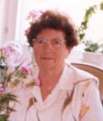

|
Född
1928-05-16
i Skjutshagen, Ornunga (P)
Död 2003-05-29 i Alingsås (P) |
 |
|
Gullbritt Irene Pettersson Hallenbert
Född 1928-05-16 i Skjutshagen, Ornunga (P) Död 2003-05-29 i Alingsås (P) |
F
Johan Viktor Rudolf Pettersson.
Född 1889-05-04 i Skjutshagen, Ornunga (P) 1 . Död 1972 i Skjutshagen, Ornunga (P) |
FF
Alexander Pettersson.
Född 1857-12-11 i Västergården, Gundlered, Ljur (P) 1 . Död 1932 i Skjutshagen, Ornunga (P) 1 . |
FFF Petter Pehrsson. Född 1818 i Skogsbygden (P) 2 . |
|
FFM Britta Maja Nilsdotter. Född 1820 i Ljur (P) 2 . |
|||
|
FM
Eva Charlotta Johansdotter.
Född 1854-09-04 i Skjutshagen, Ornunga (P) 1 . |
FMF Johannes Pettersson. Född 1823 i Skjutshagen, Ornunga (P) 1 . Död 1914 i Skjutshagen, Ornunga (P) 1 . |
||
|
FMM Maja Stina Johansdotter. Född 1830-01-31 i Korpås 3 . Död 1883-09-14 i Skjutshagen, Ornunga (P) |
|||
|
M
Signe Hilma Viktoria Andersson.
Född 1895-01-13 i Bergsgården, Ornunga (P) 1 . Död 1957 i Skjutshagen, Ornunga (P) 2 . |
MF
Johan August Andersson.
Född 1856 i Högabacka, Ornunga (P) 2 . Död 1927 4 . |
MFF Andreas Andersson. Född 1824 i Högabacka, Ornunga (P) 4 . Död 1911 i Skog C 13/256 mtl "Högabacka", Ornunga (P) 4 . |
|
|
MFM Lovisa Johansdotter. Född 1826 i Stommen, Ljur (P) Död 1906 i Skog C 13/256 mtl "Högabacka", Ornunga (P) 4 . |
|||
|
MM
Hilma Fredrika Andersdotter.
Född 1861 i Asklanda (P) 2 . Död 1923 i Ornunga (P) 2 . |
|||
|
Gift
Erland Ramsdal. Född i Norge Död |
Framställd 2026-03-14 med hjälp av Disgen version 2025.